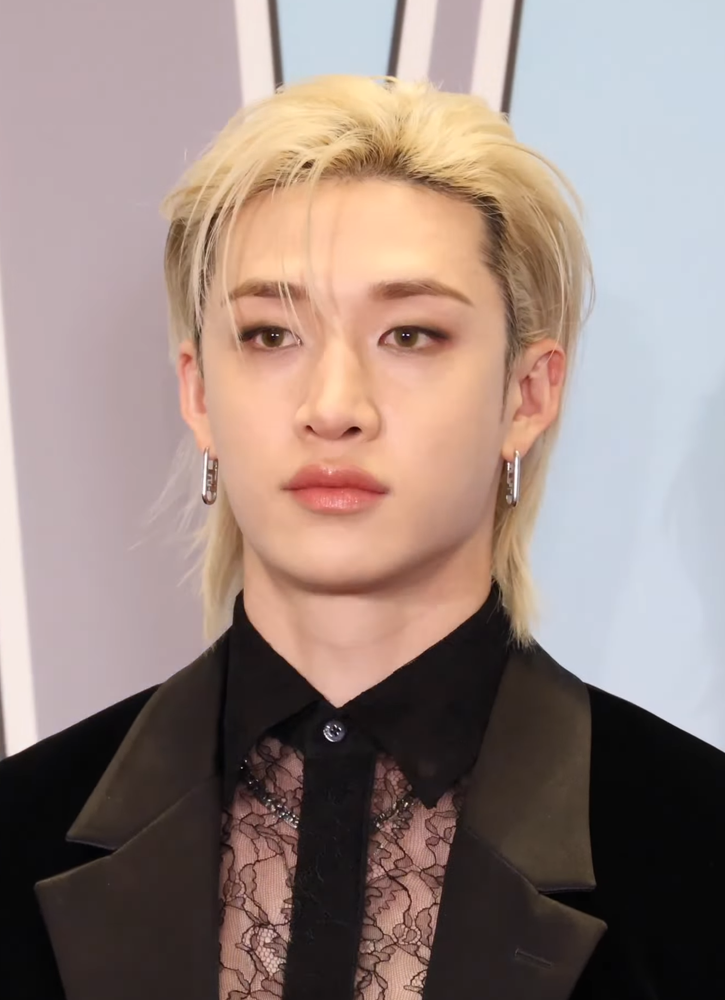

Bang Chan
Bang Chan a Stray Kids vezetője és az együttes egyik legfontosabb kreatív motorja. Fiatal korában Ausztráliában élt, majd tizenévesen költözött Dél-Koreába, hogy a JYP Entertainment gyakornoka legyen.
Producerként és dalszerzőként kulcsszerepet játszik az együttes zenéjének megalkotásában. A 3RACHA nevű produceri csapatban dolgozik Changbinnel és Hannal.

Lee Minho
Lee Know a Stray Kids egyik legerősebb táncosa. Debütálása előtt profi háttértáncosként dolgozott, és turnékon is fellépett a világhírű K-pop csapattal, a BTS-szel.
Precíz és technikás táncstílusa fontos szerepet játszik a Stray Kids koreográfiáiban. A rajongók különösen kedvelik humorát és kissé különc személyiségét.